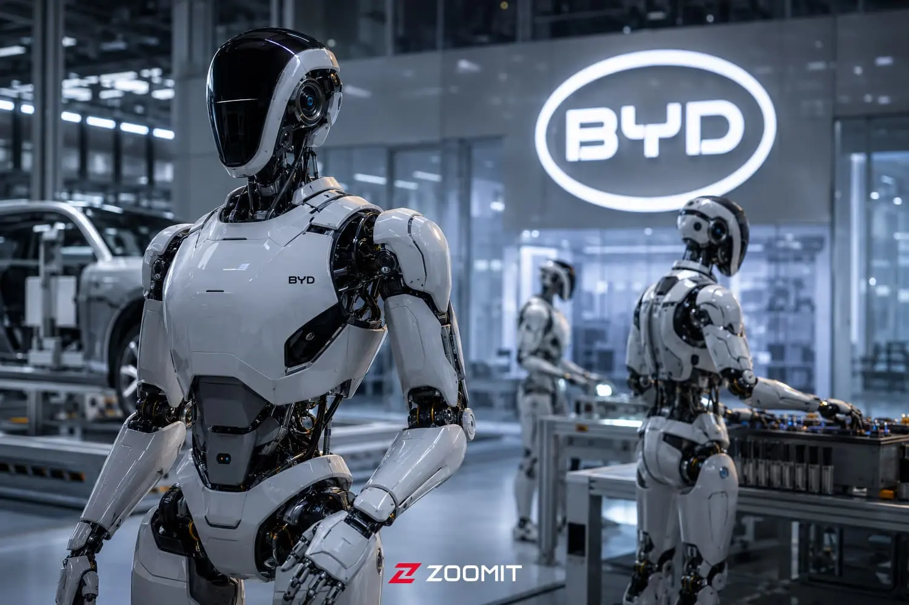

بزرگترین خودروساز چین ربات انساننمای اختصاصی میسازد

ورود خودروسازان به دنیای رباتهای انساننما
صنعت خودروسازی در سالهای اخیر با سرعت زیادی به سمت استفاده از فناوریهای هوشمند و رباتیک حرکت کرده است. شرکتهای بزرگ این صنعت تلاش میکنند با استفاده از فناوریهای جدید، فرایند تولید خود را بهبود دهند.
یکی از زمینههای مورد توجه خودروسازان، توسعه رباتهای انساننما است؛ رباتهایی که از نظر شکل ظاهری و شیوه حرکت، شباهتهایی به انسان دارند.
این رباتها میتوانند با استفاده از حسگرها، دوربینها و سامانههای هوشمند، محیط اطراف خود را بررسی کنند و بعضی از وظایف را بهصورت خودکار انجام دهند.
ساخت ربات انساننمای اختصاصی میتواند به خودروسازان کمک کند تا فناوری رباتیک را با نیازهای خطوط تولید و فرایندهای صنعتی خود هماهنگتر کنند.
در کارخانههای خودروسازی، بسیاری از فعالیتها به دقت و تکرارپذیری بالا نیاز دارند. استفاده از سامانههای خودکار میتواند انجام برخی از این فعالیتها را آسانتر کند.
با این حال، رباتهای انساننما برای استفاده گسترده در محیطهای صنعتی همچنان باید از نظر ایمنی، دقت عملکرد و توانایی کار در شرایط مختلف آزمایش شوند.
یکی از چالشهای مهم در توسعه این رباتها، طراحی سیستمهایی است که بتوانند در محیطهای متغیر تصمیمگیری کنند و با موانع پیشبینینشده روبهرو شوند.
هوش مصنوعی نیز نقش مهمی در پیشرفت رباتهای انساننما دارد. این فناوری میتواند به رباتها کمک کند اطلاعات محیط را تحلیل کنند و وظایف مشخصی را با انعطافپذیری بیشتری انجام دهند.
البته توسعه چنین فناوریهایی به سرمایهگذاری، تحقیقات تخصصی و آزمایشهای متعدد نیاز دارد. به همین دلیل، زمان رسیدن رباتها به مرحله استفاده گسترده به تواناییهای فنی و برنامههای شرکت سازنده بستگی خواهد داشت.
اگر این پروژه به مرحله بهرهبرداری صنعتی برسد، گسترش همکاری میان خودروسازی، هوش مصنوعی و رباتیک باشد؛ حوزههایی که احتمالاً در آینده ارتباط نزدیکتری با یکدیگر خواهند داشت.